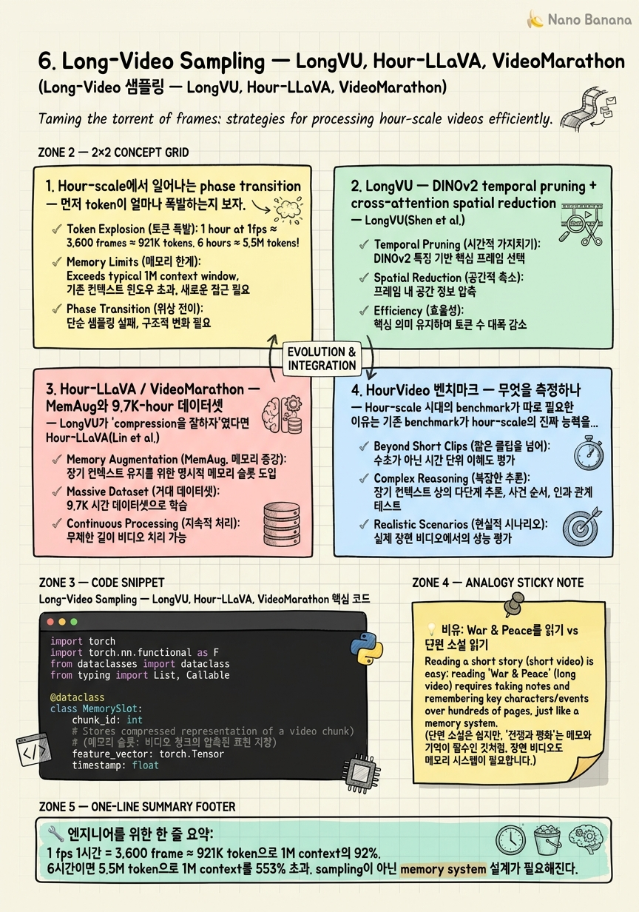

Long-Video Sampling — LongVU, Hour-LLaVA, VideoMarathon

🎯 학습 목표
- 30분-1시간-6시간 구간에서 token budget이 어떻게 폭발하는지 정량적으로 설명할 수 있다
- LongVU의 DINOv2 temporal pruning이 왜 CLIP similarity보다 redundancy 검출에 강한지 말할 수 있다
- Hour-LLaVA의 MemAug가 어떻게 1 FPS hour-long training을 가능하게 하는지 설명할 수 있다
- HourVideo가 Video-MME long split / EgoSchema / MLVU와 어떻게 다른 능력을 측정하는지 구분할 수 있다
- Atkinson-Shiffrin식 episodic memory 패턴을 video 시스템에 어떻게 적용하는지 안다
- memory-augmented sampling을 직접 sketch할 수 있다
Chapter 3–5는 5분짜리 영상에서 어떤 frame을 고를지를 다뤘다. 그러나 1시간이 넘어가는 순간 문제의 성격이 바뀐다. 1 fps만 해도 3,600 frame이고, 6시간이면 21,600 frame이다. SigLIP token 256개씩만 잡아도 token이 백만 단위로 폭발한다. 이건 단순히 'sampler를 더 영리하게'로 해결할 영역이 아니다. 인간이 War & Peace를 읽을 때 한 페이지씩 다 외우는 게 아니라 chapter 요약과 메모를 쓰는 것처럼, hour-scale video도 episodic memory 라는 다른 인지 시스템이 필요하다. 이 챕터는 LongVU(ICLR 2025, Meta, arXiv:2410.17434)의 spatiotemporal adaptive compression, Hour-LLaVA(NeurIPS 2025 Spotlight)의 MemAug + VideoMarathon 9.7K-hour 데이터셋, 그리고 HourVideo 벤치마크가 이 phase transition을 어떻게 풀고 있는지를 본다.
핵심 내용
1. Hour-scale에서 일어나는 phase transition
먼저 token이 얼마나 폭발하는지 보자. SigLIP per-frame ≈ 256 vision token, frame 당 평균치로 잡자.
| 길이 | 1 fps frames | Tokens(256/frame) | 1M ctx 대비 |
|---|---|---|---|
| 5분 | 300 | 76.8K | 7.6% |
| 30분 | 1,800 | 460K | 46% |
| 1시간 | 3,600 | 921K | 92% |
| 6시간 | 21,600 | 5.5M | 553% |
5분에서는 어떤 sampler든 다 들어간다. 30분에서는 query-aware adaptive sampling (Chapter 3–5)이 충분히 효과적이다. 그러나 1시간을 넘는 순간 1M context에도 1 fps가 안 들어간다. 6시간이면 token compression(VideoChat-Flash의 1/50 HiCo) 없이는 시작도 못한다.
그리고 token만의 문제가 아니다. 1시간 영상에서는 사건이 시간적으로 분산되어 있다. 'A 인물이 B를 보고 어떻게 반응했나?'라는 질문에 A와 B가 40분 차이로 등장할 수 있다. 5분 clip의 short-range attention pattern은 여기서 깨진다. 이게 hour-scale의 phase transition 두 축이다: token explosion + temporal dispersion.
결론: hour-scale은 'sampler를 더 영리하게'가 아니라 'memory 시스템을 추가'하는 새로운 design axis를 요구한다.
2. LongVU — DINOv2 temporal pruning + cross-attention spatial reduction
LongVU(Shen et al., Meta, ICLR 2025, arXiv:2410.17434)는 hour-scale의 첫 production-ready 솔루션 중 하나다. 핵심 통찰은 spatiotemporal adaptive compression: 시간 축과 공간 축을 서로 다른 방법으로 압축한다.
Temporal axis — DINOv2 similarity pruning. 인접 frame이 비슷하면 둘 중 하나를 버린다. 여기서 결정적인 디테일은 어떤 encoder의 similarity를 쓰느냐다. LongVU는 CLIP이 아니라 DINOv2 embedding의 cosine similarity를 쓴다. 이유는 분명하다:
-
CLIP은 언어-정렬 representation이라 'a person walking'과 'a person standing'을 의미적으로 비슷하다고 평가한다. redundancy 판정에 부적합.
-
DINOv2는 self-supervised visual representation이라 픽셀 수준 변화(자세, 시점, 조명)에 민감하다. 진짜로 시각적 정보가 새로운지 판단하는 데 적합.
즉 'semantically similar but visually different' frame을 CLIP similarity로 자르면 정보가 날아간다. DINOv2 similarity는 visual redundancy를 정확히 잡는다. 이게 LongVU의 핵심 design choice다.
Spatial axis — cross-attention reduction. Temporal pruning을 통과한 frame에 대해서도, 모든 patch를 다 LLM에 넣지 않는다. Query text를 condition으로 cross-attention을 돌려서 query와 관련 있는 patch만 살린다. 결과적으로 같은 token budget으로 훨씬 긴 영상을 처리한다.
중요한 건 두 축이 순서가 있다는 것이다: temporal 먼저, spatial 그 다음. 왜? Frame 하나를 통째로 버리는 게 patch를 버리는 것보다 비용 효율이 훨씬 좋기 때문이다.
3. Hour-LLaVA / VideoMarathon — MemAug와 9.7K-hour 데이터셋
LongVU가 'compression을 잘하자'였다면 Hour-LLaVA(Lin et al., NeurIPS 2025 Spotlight)는 'memory를 추가하자'다. 핵심 구성요소 두 개.
MemAug (Memory Augmentation module). 영상을 chunk 단위(예: 30초)로 자르고, 각 chunk를 작은 memory token bank로 압축한다. 새 chunk가 들어올 때 과거의 memory bank를 cross-attention key/value로 참조한다. 즉 LLM이 현재 chunk를 처리하면서 과거 chunk의 압축된 표현을 읽는다. 이건 사실상 Transformer-XL의 segment-recurrent memory를 video에 도입한 셈이다. 결과: 1 FPS로 1시간 영상을 end-to-end 학습 가능.
VideoMarathon 데이터셋. Hour-LLaVA의 진짜 임팩트는 데이터셋이다. 9,700 시간 분량의 hour-long video + QA pair를 공개했다. 비교: 기존 LLaVA-Video 178K 클립의 평균 길이가 ~1분대인 걸 생각하면, hour-long training data는 처음으로 산업 규모에 도달했다. 'hour-scale을 풀려면 hour-scale 데이터로 학습해야 한다'는 당연한 명제가 처음으로 가능해진 것.
MemAug + VideoMarathon 조합의 결론은 단순하다: hour-scale은 inference-time trick(더 영리한 sampler)만으로는 못 풀고, training distribution이 hour-scale이어야 한다.
4. HourVideo 벤치마크 — 무엇을 측정하나
Hour-scale 시대의 benchmark가 따로 필요한 이유는 기존 benchmark가 hour-scale의 진짜 능력을 측정하지 못해서다. 비교해보자.
| 벤치마크 | 평균 길이 | 측정하는 능력 |
|---|---|---|
| Video-MME (Long split) | ~30–60분 | comprehensive QA, multi-domain |
| MLVU | 평균 10분대 | multitask long-video understanding |
| LongVideoBench | 8분–1시간 | referred-question QA (referring expression 포함) |
| EgoSchema | 3분 | egocentric long-form (실은 'long'이 아님) |
| HourVideo | 1시간 전후 | temporal reasoning, causal chain, narrative summarization |
| Multi-Hop NIAH | 10K frame | needle-in-haystack (retrieval 능력만) |
HourVideo의 차별점: - 단일 timestamp 한 곳 보면 풀리는 question을 의도적으로 배제 - temporal reasoning chain('A 다음에 B가 일어났고 그 결과 C가 발생한 이유는?') - long-range narrative summarization - causal attribution across hour-scale gap
Video-MME long split이 여전히 'long-range retrieval+QA'를 측정하는 데 비해, HourVideo는 'hour-scale에서의 reasoning'을 직접 겨눈다. NIAH는 retrieval만 측정해서 reasoning을 빠뜨린다. 그래서 hour-scale 시스템 평가에서는 NIAH(retrieval baseline) + HourVideo(reasoning) 조합이 표준이 되고 있다.
5. Episodic memory 패턴 — Atkinson-Shiffrin과 RAG-for-video
한 발 떨어져서 패턴을 보자. Hour-scale video understanding이 수렴하고 있는 architectural pattern은 사실 인지심리학의 Atkinson-Shiffrin memory model과 정확히 같다.
- Sensory register ≈ raw frame decode
- Short-term / working memory ≈ 현재 chunk의 full-resolution token
- Long-term memory ≈ 압축된 memory bank (MemAug의 memory token)
- Retrieval ≈ query 시점에 memory bank에서 관련 token을 cross-attention으로 꺼냄
이건 RAG-for-text와도 구조적으로 같다. 차이는 retrieval unit이 document chunk가 아니라 video segment의 압축 표현이라는 것. 'video as a stream of episodes, each episode as a retrievable memory'.
이 패턴이 의미하는 것: hour-scale을 풀려고 등장한 시스템들(LongVU, Hour-LLaVA, VideoChat-Flash의 HiCo)이 표면적으로는 'compression'이라는 이름을 달고 있지만, 더 깊은 차원에서는 다 episodic memory를 학습하고 있다. 그래서 Chapter 7의 token-level compression과 이 챕터의 long-video sampling이 결국 같은 방향으로 수렴한다. 둘 다 'video를 memory로 추상화'하려는 시도다.
실무적 함의: hour-scale 시스템을 설계할 때 'sampler' 모듈만 swap하는 Chapter 3–5의 plug-and-play 패러다임은 부족하다. memory module도 swap 대상으로 분리해야 한다. Sampler.select() 옆에 MemoryStore.write() / MemoryStore.retrieve()가 인터페이스로 같이 있어야 한다.
💡 비유로 이해하기
단편 소설은 처음부터 끝까지 한 호흡으로 읽는다. 모든 디테일을 working memory에 올려두고 마지막 페이지까지 끌고 간다. 이게 5분 video clip의 모델이다 — frame 전부를 context에 넣고 LLM의 attention이 다 처리한다.
War & Peace를 같은 방식으로 읽으려고 하면 망한다. 1,200페이지를 working memory에 다 올릴 수 없다. 그래서 사람은 다른 인지 시스템을 동원한다: chapter 끝에서 무슨 일이 일어났는지 요약 메모를 쓰고, 등장인물 관계도를 외부 노트에 그리고, 100페이지 전에 누가 누구한테 뭘 약속했는지가 필요해지면 목차로 돌아가서 다시 찾아본다. 즉 working memory + long-term memory + retrieval이 협력한다.
Hour-scale video도 똑같다. 'frame을 더 영리하게 고른다(sampler)'는 단편 소설을 더 잘 읽는 기술이다. 하지만 1시간 영상에서 진짜 필요한 건 'chapter 요약을 쓰는 기술'(MemAug), '시각적으로 중복인 페이지를 건너뛰는 기술'(LongVU의 DINOv2 pruning), 그리고 '나중에 다시 찾아볼 수 있게 인덱스를 만드는 기술'(memory bank retrieval)이다. 다른 인지 시스템을 동원해야 하는 영역으로 넘어가는 것이다.
💻 코드 예시
Memory-augmented frame sampling의 sketch. 영상을 chunk 단위로 처리하면서 각 chunk를 small memory bank로 압축하고, query 시점에 memory bank를 retrieval해서 top-K relevant frame을 고른다. Encoder는 placeholder로 둔다 (실전에서는 SigLIP/DINOv2).
import torch
import torch.nn.functional as F
from dataclasses import dataclass
from typing import List, Callable
@dataclass
class MemorySlot:
chunk_id: int
frame_indices: List[int]
summary_emb: torch.Tensor # [D], pooled chunk representation
frame_embs: torch.Tensor # [T_chunk, D], per-frame for re-retrieval
class MemoryAugmentedSampler:
def __init__(self, encode_fn: Callable, chunk_size: int = 60,
mem_tokens_per_chunk: int = 4, topk_frames: int = 32):
self.encode = encode_fn
self.chunk_size = chunk_size # 60 frames @ 1 fps = 1 min chunk
self.M = mem_tokens_per_chunk
self.K = topk_frames
self.memory: List[MemorySlot] = []
def _pool_to_memory(self, chunk_embs: torch.Tensor) -> torch.Tensor:
# Attention-pooled summary: split chunk into M segments, mean-pool each.
T, D = chunk_embs.shape
seg = max(1, T // self.M)
pooled = torch.stack([chunk_embs[i*seg:(i+1)*seg].mean(0)
for i in range(self.M)])
return pooled.mean(0)
def ingest(self, frames: torch.Tensor):
for c, start in enumerate(range(0, len(frames), self.chunk_size)):
chunk = frames[start:start + self.chunk_size]
embs = self.encode(chunk)
summary = self._pool_to_memory(embs)
self.memory.append(MemorySlot(
chunk_id=c,
frame_indices=list(range(start, start + len(chunk))),
summary_emb=summary, frame_embs=embs))
def query(self, query_emb: torch.Tensor) -> List[int]:
# 1) Coarse: rank chunks by query vs summary similarity.
chunk_scores = torch.stack([
F.cosine_similarity(query_emb, m.summary_emb, dim=0)
for m in self.memory])
top_chunks = chunk_scores.topk(min(8, len(self.memory))).indices.tolist()
# 2) Fine: within winning chunks, score per-frame and take global top-K.
candidates = []
for ci in top_chunks:
m = self.memory[ci]
fs = F.cosine_similarity(query_emb.unsqueeze(0), m.frame_embs, dim=-1)
for idx, score in zip(m.frame_indices, fs.tolist()):
candidates.append((score, idx))
candidates.sort(reverse=True)
return [idx for _, idx in candidates[:self.K]]세 가지 디자인 결정이 핵심이다. (1) chunk_size=60은 1 fps 기준 1분 chunk — Hour-LLaVA의 MemAug가 사용하는 segment 단위와 같은 정신이다. (2) _pool_to_memory는 attention-pooled summary로 chunk를 작은 memory representation으로 압축한다 — 실전 MemAug는 학습된 cross-attention pooler를 쓰지만 sketch에서는 segment-mean으로 단순화. (3) query는 two-stage retrieval이다: 먼저 chunk-level summary로 hour-scale에서 분 단위 거르고, 그 다음 winning chunk 안에서 frame-level로 정밀 ranking. 1시간 = 60 chunk = 60번 cosine으로 1차 필터 → 후보 chunk 8개 × 60 frame = 480 frame에 대해서만 fine ranking. 3,600 frame을 다 LLM에 넣지 않고도 query-relevant top-K를 가져온다. 이게 Atkinson-Shiffrin 패턴 그대로다: summary_emb = long-term memory, frame_embs = retrieval index, 최종 K개 frame = working memory로 LLM에 들어가는 것.
🏭 현업에서의 평가
✅ 시니어가 보는 것
- 1시간 / 6시간 비디오에서 1 fps token budget이 얼마인지 즉석 계산 (백만 단위 token 폭발)
- temporal pruning과 spatial reduction을 서로 *직교한 축*으로 다루는 사고
- 'training data distribution이 hour-scale이어야 한다'는 인식 (VideoMarathon 9.7K hours의 의의)
- sampler-only 아키텍처와 memory-augmented 아키텍처의 인터페이스 차이를 코드 수준으로 분리
- retrieval(NIAH)과 reasoning(HourVideo) benchmark의 측정 영역을 구분
⚠️ 레드 플래그
- '더 큰 context window면 해결된다'는 답 (token explosion 6시간 = 5.5M, 1M ctx로도 부족)
- CLIP similarity로 temporal pruning을 하겠다는 제안 (semantic 정렬 때문에 visual redundancy 못 잡음)
- memory를 stateless cache로만 보고 cross-attention key/value로 쓰는 학습 가능 representation으로 안 보는 시각
- HourVideo와 EgoSchema를 'long-video benchmark'로 묶어버리는 평가 ('long'의 정의가 다르다)
- hour-scale을 inference-time problem으로만 보고 training distribution 문제를 무시하는 관점
🎤 예상 인터뷰 질문
- **Q1. Memory vs context tradeoff.** 1 fps 6시간 video를 처리해야 하고 1M context window가 있다. SigLIP 256 token/frame 가정. (a) naive로 다 넣었을 때 token이 얼마이고 몇 % over budget인지 계산하라. (b) hourly chunk + per-chunk 4 memory token으로 압축했을 때 token이 어떻게 변하는지 계산하라. (c) 이 둘 사이의 어떤 hybrid가 reasoning benchmark에서 더 잘 동작할 것 같은지, MemAug의 design을 근거로 논하라.
- **Q2. HourVideo가 측정하는 것.** Video-MME long split, MLVU, EgoSchema, LongVideoBench, HourVideo, Multi-Hop NIAH 중 'hour-scale에서 causal reasoning across 40-minute gap'을 측정하는 데 가장 적합한 것은 무엇이고, 나머지가 왜 부족한지 설명하라.
- **Q3. LongVU의 DINOv2 선택.** LongVU의 temporal pruning 모듈을 'CLIP similarity'로 바꾸려는 PR이 올라왔다. 'CLIP이 이미 우리 인코더에 있고 추가 모델 weight를 안 쓴다'는 근거. 이 PR을 reject한다면 어떤 실패 케이스로 reviewer를 설득할 것인가?
✨ 핵심 요약
Hour-scale은 phase transition이다
1 fps 1시간 = 3,600 frame ≈ 921K token으로 1M context의 92%. 6시간이면 5.5M token으로 1M context를 553% 초과. sampling이 아닌 *memory system* 설계가 필요해진다.
LongVU는 spatiotemporal 축을 분리한다
arXiv:2410.17434 (ICLR 2025, Meta). Temporal axis는 DINOv2 similarity pruning, spatial axis는 query-conditioned cross-attention reduction. Frame 단위 버리기가 patch 단위 버리기보다 비용 효율 좋아서 temporal이 항상 먼저.
DINOv2 > CLIP for redundancy 검출
CLIP은 language-aligned라 'walking'과 'standing'을 의미적으로 가깝게 본다. visual redundancy 판단에는 self-supervised visual representation인 DINOv2가 더 정확하다.
MemAug는 segment-recurrent memory를 video에 도입했다
Hour-LLaVA (NeurIPS 2025 Spotlight). 각 chunk를 memory token bank로 압축, 다음 chunk가 cross-attention K/V로 참조. 1 FPS hour-long end-to-end 학습 가능.
VideoMarathon 9.7K-hour는 distribution shift을 푼다
기존 long-video dataset이 평균 분 단위였던 데서 처음으로 hour-scale 학습 분포가 가능해졌다. hour-scale은 inference-time trick으로는 못 풀고 training distribution이 hour-scale이어야 한다는 명제의 실증.
HourVideo는 reasoning을 직접 측정한다
NIAH는 retrieval, EgoSchema는 3분이라 'long' 아님, Video-MME long split은 comprehensive QA. HourVideo만 hour-scale temporal reasoning과 causal chain을 직접 겨눈다. NIAH(retrieval) + HourVideo(reasoning) 조합이 표준 평가축.
수렴하는 패턴은 episodic memory다
LongVU의 compression, Hour-LLaVA의 MemAug, VideoChat-Flash의 HiCo가 표면적으로 다 다르지만 모두 Atkinson-Shiffrin의 sensory-working-long-term memory + retrieval 구조로 수렴한다. RAG-for-video라는 멘탈 모델이 가장 정확하다.
Plug-and-play 인터페이스에 memory를 1급 객체로 올려야 한다
Chapter 9에서 다룰 Sampler.select() 옆에 MemoryStore.write() / retrieve()가 동등한 swap point로 분리되어야 한다. hour-scale 시스템에서 memory는 sampler의 부속이 아니라 independent 모듈이다.